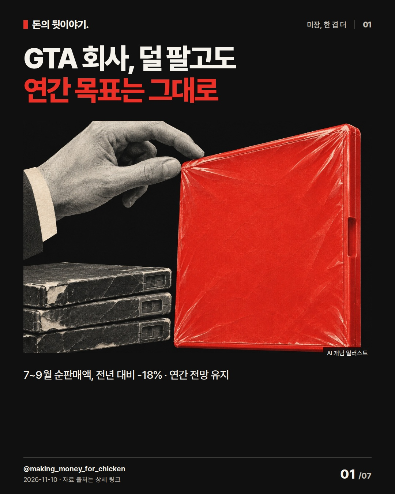
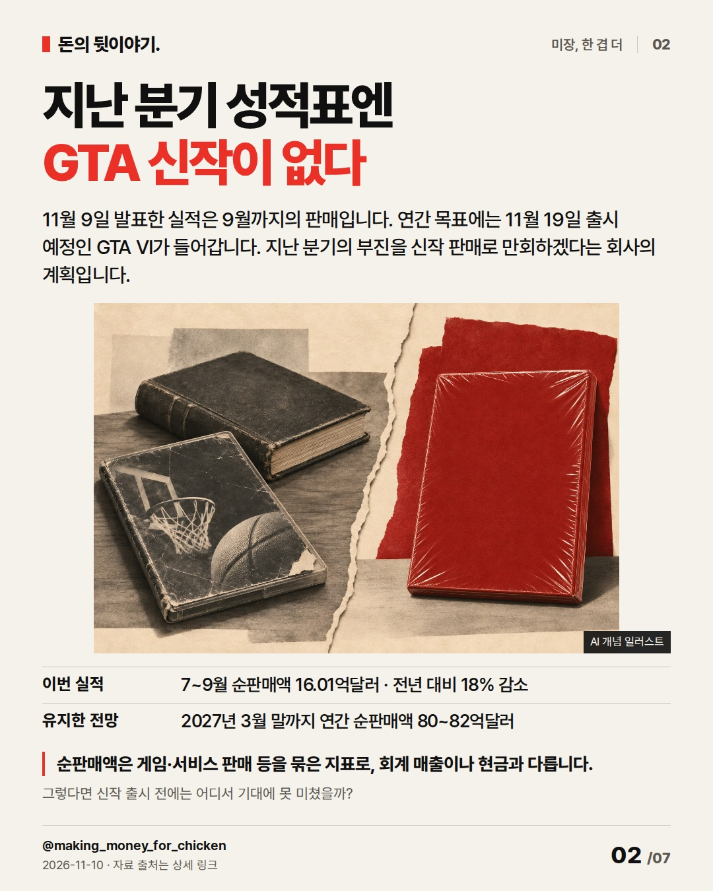
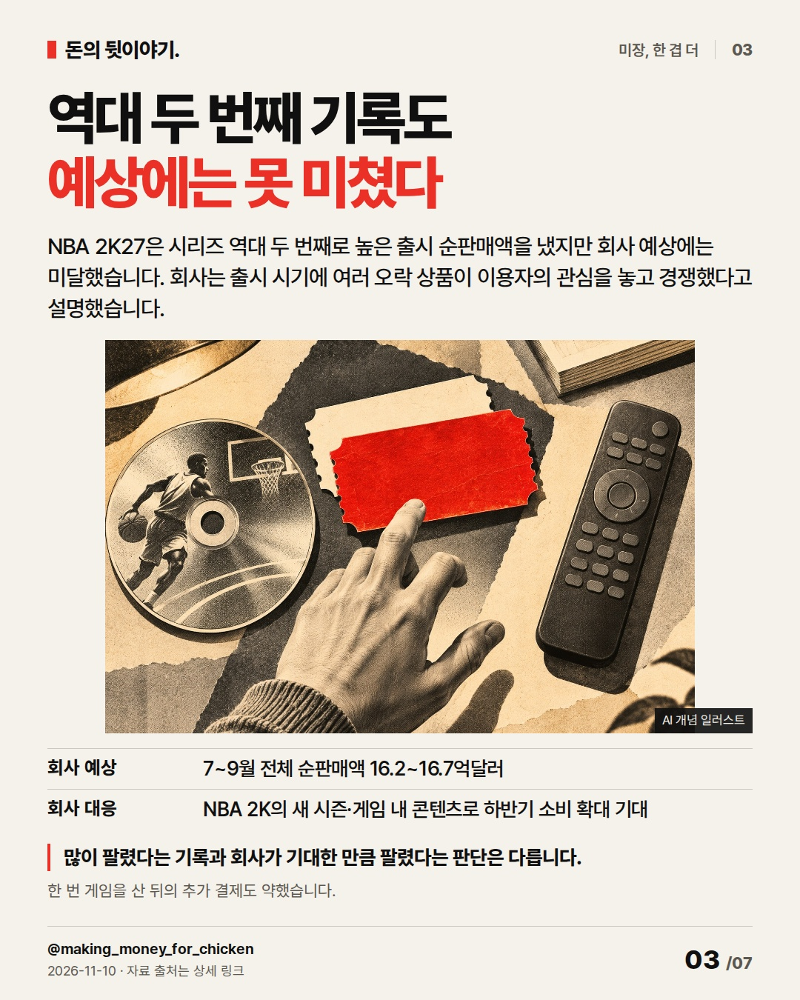
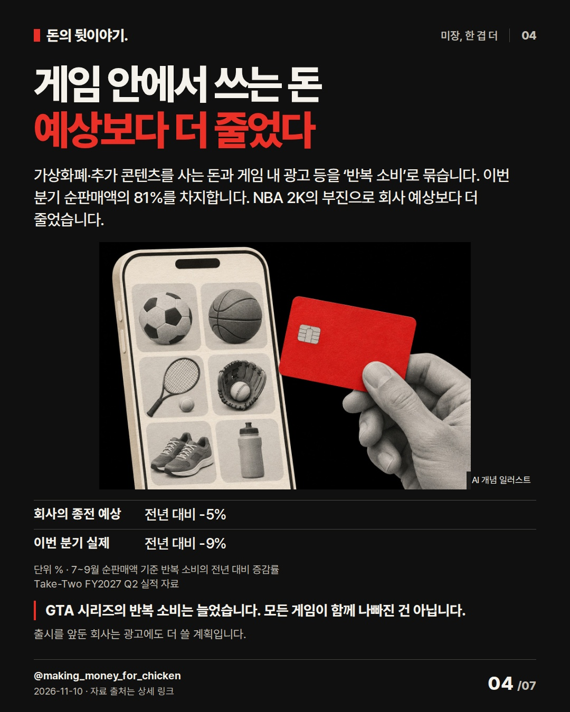
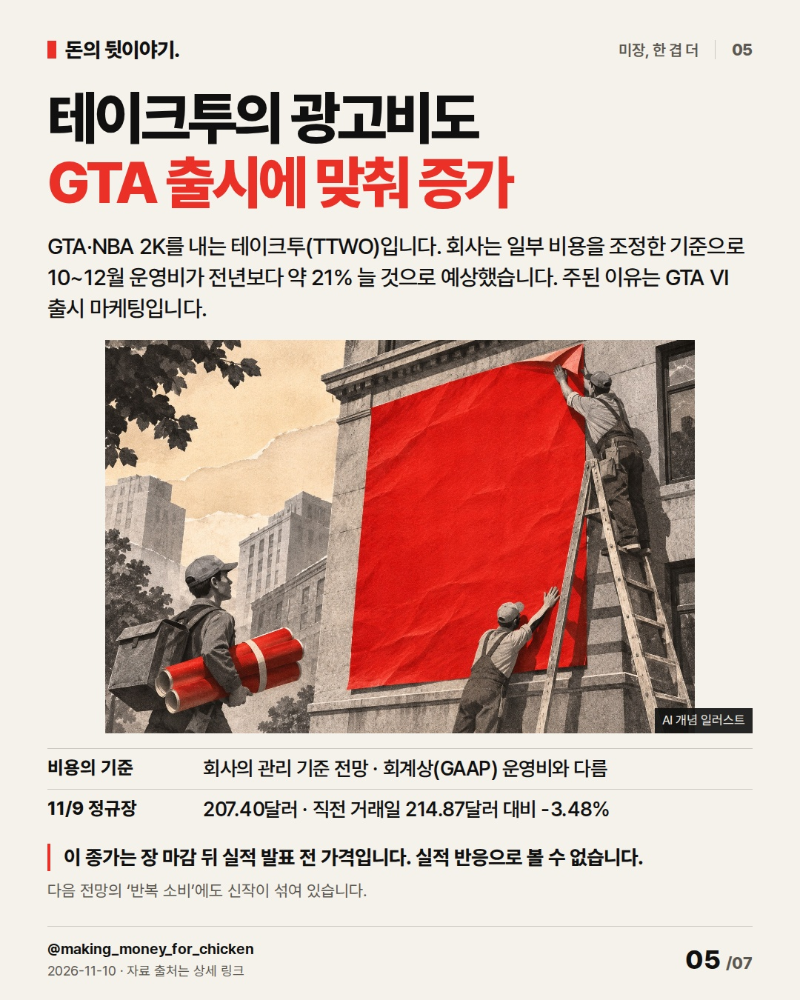
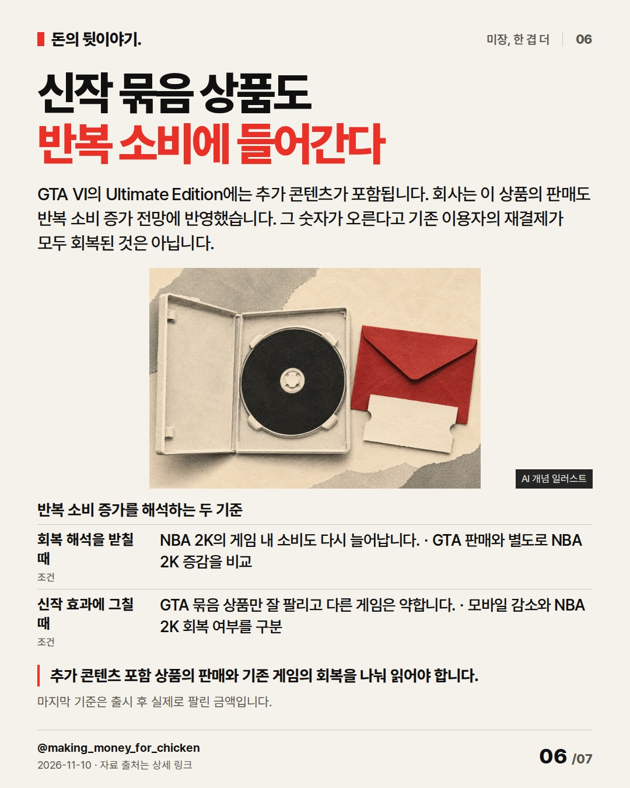
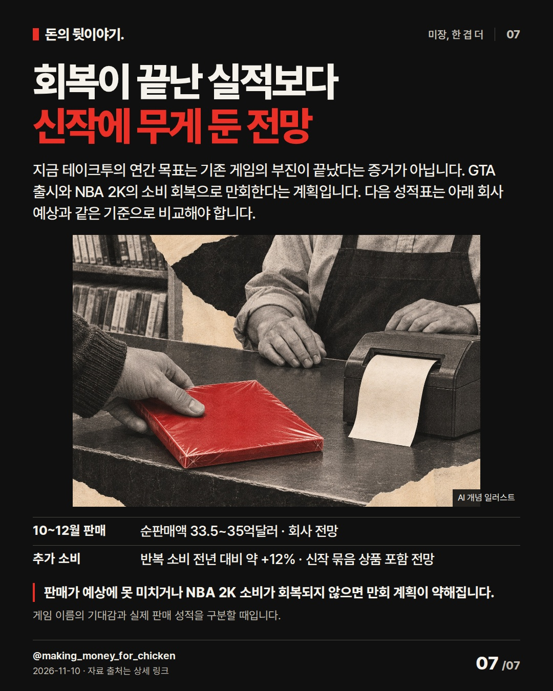

덜 팔렸는데도 연간 목표는 그대로입니다. GTA VI 출시가 들어간 전망과 이미 끝난 분기 실적을 나누면, 테이크투(TTWO)가 무엇으로 만회하려는지 보입니다. #미국주식 #테이크투 #게임산업

7~9월 순판매액, 전년 대비 -18% · 연간 전망 유지
AI 생성 개념 일러스트 · 실제 현장이나 공식 제품 사진이 아닙니다.

11월 9일 발표한 실적은 9월까지의 판매입니다. 연간 목표에는 11월 19일 출시 예정인 GTA VI가 들어갑니다. 지난 분기의 부진을 신작 판매로 만회하겠다는 회사의 계획입니다.
순판매액은 게임·서비스 판매 등을 묶은 지표로, 회계 매출이나 현금과 다릅니다. 그렇다면 신작 출시 전에는 어디서 기대에 못 미쳤을까?
AI 생성 개념 일러스트 · 실제 현장이나 공식 제품 사진이 아닙니다.
NBA 2K27은 시리즈 역대 두 번째로 높은 출시 순판매액을 냈지만 회사 예상에는 미달했습니다. 회사는 출시 시기에 여러 오락 상품이 이용자의 관심을 놓고 경쟁했다고 설명했습니다.
많이 팔렸다는 기록과 회사가 기대한 만큼 팔렸다는 판단은 다릅니다. 한 번 게임을 산 뒤의 추가 결제도 약했습니다.
AI 생성 개념 일러스트 · 실제 현장이나 공식 제품 사진이 아닙니다.
가상화폐·추가 콘텐츠를 사는 돈과 게임 내 광고 등을 ‘반복 소비’로 묶습니다. 이번 분기 순판매액의 81%를 차지합니다. NBA 2K의 부진으로 회사 예상보다 더 줄었습니다.
GTA 시리즈의 반복 소비는 늘었습니다. 모든 게임이 함께 나빠진 건 아닙니다. 출시를 앞둔 회사는 광고에도 더 쓸 계획입니다. % · Take-Two FY2027 Q2 실적 자료 · 7~9월 순판매액 기준 반복 소비의 전년 대비 증감률
AI 생성 개념 일러스트 · 실제 현장이나 공식 제품 사진이 아닙니다.
GTA·NBA 2K를 내는 테이크투(TTWO)입니다. 회사는 일부 비용을 조정한 기준으로 10~12월 운영비가 전년보다 약 21% 늘 것으로 예상했습니다. 주된 이유는 GTA VI 출시 마케팅입니다.
이 종가는 장 마감 뒤 실적 발표 전 가격입니다. 실적 반응으로 볼 수 없습니다. 다음 전망의 ‘반복 소비’에도 신작이 섞여 있습니다.
AI 생성 개념 일러스트 · 실제 현장이나 공식 제품 사진이 아닙니다.
GTA VI의 Ultimate Edition에는 추가 콘텐츠가 포함됩니다. 회사는 이 상품의 판매도 반복 소비 증가 전망에 반영했습니다. 그 숫자가 오른다고 기존 이용자의 재결제가 모두 회복된 것은 아닙니다.
추가 콘텐츠 포함 상품의 판매와 기존 게임의 회복을 나눠 읽어야 합니다. 마지막 기준은 출시 후 실제로 팔린 금액입니다. 반복 소비 증가를 해석하는 두 기준
AI 생성 개념 일러스트 · 실제 현장이나 공식 제품 사진이 아닙니다.
지금 테이크투의 연간 목표는 기존 게임의 부진이 끝났다는 증거가 아닙니다. GTA 출시와 NBA 2K의 소비 회복으로 만회한다는 계획입니다. 다음 성적표는 아래 회사 예상과 같은 기준으로 비교해야 합니다.
판매가 예상에 못 미치거나 NBA 2K 소비가 회복되지 않으면 만회 계획이 약해집니다. 게임 이름의 기대감과 실제 판매 성적을 구분할 때입니다.
AI 생성 개념 일러스트 · 실제 현장이나 공식 제품 사진이 아닙니다.{
"improvement": "최근5편(11/9·11/5·11/4 시장·AMD·11/2 시장)의 원고·실제27장·review를 비교했습니다. 마지막의 추상적 판단·확인 항목 반복 대신 이번에는 소비자가 돈을 쓰는 시점과 대상을 한 축으로 구분합니다. 2장 과거 판매→3장 오락 선택→4장 추가 결제→6장 신작 묶음 상품으로 새 근거를 더했습니다.",
"reason": "불스토리(국내 브랜드) 「Rheinmetall 전망 하향과 주가 급락, 매출 변수」 공식 웹 본문·FAQ: 기대와 매출이 잡히는 시점을 분리. 홍춘욱 「타잔 경제학」(2022/8/29) 공식 Brunch 전체: 독자의 오락 선택을 경쟁 이유로 설명. 인용된 책 일부만 읽었고 책 전체·영상·Instagram 카드는 미열람. 문구·이미지·투자 권유는 가져오지 않았습니다.",
"application": "초안 ‘실적 부진에도 성장 가이던스 유지’→2장 ‘연간 목표에는 11월 19일 출시 예정인 GTA VI가 들어갑니다’. ‘RCS 회복이 관건’→6장 신작 상품과 기존 게임 재결제 구분. 정상 preview 42724129898의 실제7장 확인 후 표지에 전년 비교를 보강하고, 4장 예상 미달 원인은 NBA 2K로 좁힘. 모바일은 회사 예상에 부합. 5장 관리 기준의 뜻도 풀어 새 preview 제출. 흥행 확정·소비 전면 회복 제목은 반대 근거로 폐기.",
"avoided_repetition": "표지 결론을 끝에서 되풀이하지 않고 7장에 실제와 비교할 분기 판매·추가 소비 전망을 남겼습니다. 임원 낙관 발언·개별 모바일 게임 나열·예약 판매량 추정·주가 목표는 삭제. 직전 시장 수급 과제는 억지 적용하지 않고 AMD의 비용 원인 보완은 5장 출시 마케팅 설명으로 반영. 다음 편은 신작 상품과 기존 이용자 소비의 분리 공시 여부를 우선 확인. 반응 지표 미확보."
}투자 참고용 · 매수·매도 권유 아님.